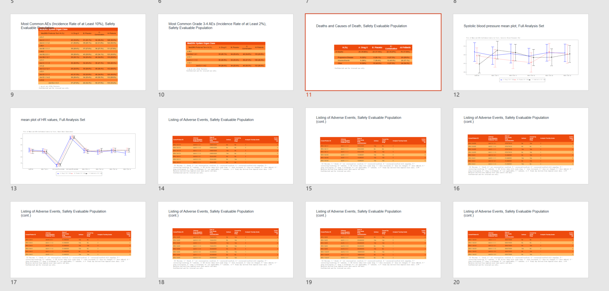

AutoslideR functions that are used for slide rendering and workflow are already open-sourced with the autoslider.core package. In this example, we show the general autoslideR workflow, how you can create functions from our templates and produce study-specific outputs, and how you can integrate them into the autoslideR framework to automate slide generation.
Background
At its heart, autoslideR was created to tackle the inefficiencies and error-proneness of manual slide generation in clinical trials. It automates the creation of slides, significantly reducing the amount of work and time required, minimizing the risk of errors from manual data entry, and alleviating stress during demanding reporting periods.
autoslideR works by transforming your analysis data (SDTM, ADaM, raw, etc.) into standardized Table/Listing/Graph (TLG) objects. These objects are then decorated with titles, subtitles, and footnotes, positioning them at desired locations. With the addition of placeholder slides, the resulting PPTX file is ready for use in meetings.
Prerequisites
First and foremost, you need to have the autoslider.core package installed, and you need to have data available. In this example, it uses example data stored in the autoslider.core package. The data needs to be stored in a named list (in this particular example, dataset names correspond to ADaM data sets).
The autoslideR workflow would be implemented in the run_script.R file. This workflow does not require the files in programs/R/. However, if custom output_functions.R are implemented, programs/R/ would be the place to put them.
The autoslideR workflow has four main aspects:
The specifications specs.yml
This file contains the specifications of all outputs you would like to create.
For each output we define specific information, namely the program name, the footnotes & titles, the paper (this indicates the orientation, P for portrait and L for landscape, the number indicates the font size), the suffix and args.
The program name refers to a function that produces an output. This could be one of the template functions provided in autoslider.core or a custom function. See vignette adding_templates for a detailed guide on using templates.
Titles and footnotes are added once the outputs are created. We refer to that as decorating the outputs.
The suffix specifies the name of the filters that are applied to the data, before the data is funneled into the function (program). The filters themselves are specified in the filters.yml file.
The filters filters.yml
In filters.yml we specify the names of the filters used across the outputs. Each filter has a name (e.g. FAS), a title (Full Analysis Set), and then the filtering condition on a target dataset. The filter title may be appended to the output title. For the t_dm_slide slide above all filter titles that target the adsl dataset would be included in the brackets. We would thus expect the title to read: “Patient Demographics and Baseline Characteristics (Full Analysis Set)”.
As you can see, we don’t just have population filters, but also filters on serious adverse events. We can thus produce SAE tables by just supplying the serious adverse events to the AE table function. This concept generalizes also to PARAMCD values.
A typical workflow could look something like this:
library(autoslider.core)
Registered S3 method overwritten by 'tern':
method from
tidy.glm broom
library(dplyr)
Attaching package: 'dplyr'
The following objects are masked from 'package:stats':
filter, lag
The following objects are masked from 'package:base':
intersect, setdiff, setequal, union
# 1. Load ALL necessary packageslibrary(rtables) # For append_topleft()
Loading required package: formatters
Attaching package: 'formatters'
The following object is masked from 'package:base':
%||%
Loading required package: magrittr
Attaching package: 'rtables'
The following object is masked from 'package:utils':
str
library(assertthat) # For assert_that() you had issues with beforelibrary(tern)# define path to the yml filesspec_file <-file.path("metadata/autoslideR_spec.yml")filters_file <-file.path("metadata/autoslideR_filters.yml")# load all filtersfilters::load_filters(filters_file, overwrite =TRUE)
# read datadata <-list("adsl"= pharmaverseadam::adsl %>%mutate(FASFL = SAFFL, # add FASFL for illustrative purpose for t_pop_slide# DISTRTFL is needed for t_ds_slide but is missing in example dataDISTRTFL =sample(c("Y", "N"), size =length(TRT01A), replace =TRUE, prob =c(.1, .9)) ),"adae"= pharmaverseadam::adae,"adtte"= pharmaverseadam::adtte_onco,"adrs"= pharmaverseadam::adrs_onco,"adlb"= pharmaverseadam::adlb)# create outputs based on the specs and the functionsoutputs <- spec_file %>%read_spec() %>%# we can also filter for specific programs:filter_spec(., program %in%c("t_dm_slide")) %>%# these filtered specs are now piped into the generate_outputs function.# this function also requires the datagenerate_outputs(datasets = data) %>%# now we decorate based on the specs, i.e. add footnotes and titlesdecorate_outputs(version_label =NULL )
✔ 1/1 outputs matched the filter condition `program %in% c("t_dm_slide")`.
❯ Running program `t_dm_slide` with suffix 'SE'.
Filter 'SE' matched target ADSL.
254/306 records matched the filter condition `SAFFL == 'Y'`.
Warning in as_factor_keep_attributes(x, verbose = verbose): automatically
converting character variable x to factor, better manually convert to factor to
avoid failures
Warning in as_factor_keep_attributes(x, verbose = verbose): automatically
converting character variable x to factor, better manually convert to factor to
avoid failures
Warning in as_factor_keep_attributes(x, verbose = verbose): automatically
converting character variable x to factor, better manually convert to factor to
avoid failures
Warning in as_factor_keep_attributes(x, verbose = verbose): automatically
converting character variable x to factor, better manually convert to factor to
avoid failures
We can have a look at one of the outputs stored in the outputs file:
outputs$t_dm_slide_SE
An object of class "dVTableTree"
Slot "tbl":
Patient Demographics and Baseline Characteristics, Safety Evaluable Population
—————————————————————————————————————————————————————————————————————————————————————
Placebo Xanomeline High Dose Xanomeline Low Dose All Patients
—————————————————————————————————————————————————————————————————————————————————————
Sex
F 53 (61.6%) 35 (48.6%) 55 (57.3%) 143 (56.3%)
M 33 (38.4%) 37 (51.4%) 41 (42.7%) 111 (43.7%)
Age
Median 76.00 75.50 78.00 77.00
Min - Max 52.0 - 89.0 56.0 - 88.0 51.0 - 88.0 51.0 - 89.0
—————————————————————————————————————————————————————————————————————————————————————
t_dm_slide footnote
Confidential and for internal use only
GitHub repository: NA
Git hash: 9119a8e0322e44f8e387f1b55586df76bf3a6296
Slot "titles":
Patient Demographics and Baseline Characteristics, Safety Evaluable Population
Slot "footnotes":
[1] "t_dm_slide footnote"
[2] "Confidential and for internal use only"
Slot "usernotes":
[1] ""
Slot "paper":
[1] "L6"
Slot "width":
[1] 9 11 20 19 12
[1] " Patient Demographics and Baseline Characteristics, Safety Evaluable Population"
For the final product, when it includes more output, it may look like the following

Example Reviewer’s Guide Table
Source Code
---title: "Slides"order: 1---```{r setup script, include=FALSE, purl=FALSE}invisible_hook_purl <-function(before, options, ...) { knitr::hook_purl(before, options, ...)NULL}knitr::knit_hooks$set(purl = invisible_hook_purl)```# Introduction`AutoslideR` functions that are used for slide rendering and workflow are already open-sourced with the `autoslider.core` package. In this example, we show the general `autoslideR` workflow, how you can create functions from our templates and produce study-specific outputs, and how you can integrate them into the `autoslideR` framework to automate slide generation.# BackgroundAt its heart, `autoslideR` was created to tackle the inefficiencies and error-proneness of manual slide generation in clinical trials. It automates the creation of slides, significantly reducing the amount of work and time required, minimizing the risk of errors from manual data entry, and alleviating stress during demanding reporting periods.`autoslideR` works by transforming your analysis data (SDTM, ADaM, raw, etc.) into standardized Table/Listing/Graph (TLG) objects. These objects are then decorated with titles, subtitles, and footnotes, positioning them at desired locations. With the addition of placeholder slides, the resulting PPTX file is ready for use in meetings.# PrerequisitesFirst and foremost, you need to have the `autoslider.core` package installed, and you need to have data available. In this example, it uses example data stored in the `autoslider.core` package. The data needs to be stored in a named list (in this particular example, dataset names correspond to ADaM data sets).## File structureThe folder structure could look something like: ```├── programs│ ├── run_script.R│ ├── R | | ├── template_functions.R| | ├── output_functions.R├── outputs├── spec.yml├── filters.yml```The `autoslideR` workflow would be implemented in the `run_script.R` file.This workflow does not require the files in `programs/R/`. However, if custom `output_functions.R` are implemented, `programs/R/` would be the place to put them.The `autoslideR` workflow has four main aspects: ## The specifications `specs.yml` This file contains the specifications of all outputs you would like to create.For each output we define specific information, namely the program name, the footnotes & titles, the paper (this indicates the orientation, P for portrait and L for landscape, the number indicates the font size), the suffix and `args`.It could look something like that:```- program: t_dm_slide titles: Patient Demographics and Baseline Characteristics footnotes: 't_dm_slide footnote' paper: L6 suffix: SE args: arm: "TRT01A" vars: ["SEX", "AGE"]```The program name refers to a function that produces an output. This could be one of the template functions provided in `autoslider.core` or a custom function. See vignette [`adding_templates`](https://insightsengineering.github.io/autoslider.core/latest-tag/articles/adding_templates.html) for a detailed guide on using templates.Titles and footnotes are added once the outputs are created.We refer to that as decorating the outputs.The suffix specifies the name of the filters that are applied to the data, before the data is funneled into the function (program).The filters themselves are specified in the `filters.yml` file.## The filters `filters.yml`In `filters.yml` we specify the names of the filters used across the outputs. Each filter has a name (e.g. `FAS`), a title (`Full Analysis Set`), and then the filtering condition on a target dataset. The filter title may be appended to the output title. For the `t_dm_slide` slide above all filter titles that target the `adsl` dataset would be included in the brackets. We would thus expect the title to read: "Patient Demographics and Baseline Characteristics (Full Analysis Set)".As you can see, we don't just have population filters, but also filters on serious adverse events. We can thus produce SAE tables by just supplying the serious adverse events to the AE table function. This concept generalizes also to `PARAMCD` values.```ITT: title: Intent to Treat Population condition: ITTFL == "Y" target: adsl type: slrefSAS: title: Secondary Analysis Set condition: SASFL == "Y" target: adsl type: slrefSE: title: Safety Evaluable Population condition: SAFFL == "Y" target: adsl type: slrefSER: title: Serious Adverse Events condition: AESER == "Y" target: adae type: anl```# AutoslideR typical workflow exampleA typical workflow could look something like this: ```{r setup}library(autoslider.core)library(dplyr)# 1. Load ALL necessary packageslibrary(rtables) # For append_topleft()library(assertthat) # For assert_that() you had issues with beforelibrary(tern)# define path to the yml filesspec_file <-file.path("metadata/autoslideR_spec.yml")filters_file <-file.path("metadata/autoslideR_filters.yml")# load all filtersfilters::load_filters(filters_file, overwrite =TRUE)``````{r, table}# read datadata <-list("adsl"= pharmaverseadam::adsl %>%mutate(FASFL = SAFFL, # add FASFL for illustrative purpose for t_pop_slide# DISTRTFL is needed for t_ds_slide but is missing in example dataDISTRTFL =sample(c("Y", "N"), size =length(TRT01A), replace =TRUE, prob =c(.1, .9)) ),"adae"= pharmaverseadam::adae,"adtte"= pharmaverseadam::adtte_onco,"adrs"= pharmaverseadam::adrs_onco,"adlb"= pharmaverseadam::adlb)# create outputs based on the specs and the functionsoutputs <- spec_file %>%read_spec() %>%# we can also filter for specific programs:filter_spec(., program %in%c("t_dm_slide")) %>%# these filtered specs are now piped into the generate_outputs function.# this function also requires the datagenerate_outputs(datasets = data) %>%# now we decorate based on the specs, i.e. add footnotes and titlesdecorate_outputs(version_label =NULL )```We can have a look at one of the outputs stored in the outputs file:```{r}outputs$t_dm_slide_SE``````{r}outputs %>%generate_slides(outfile ="presentation.pptx",template =file.path(system.file(package ="autoslider.core"), "/theme/basic.pptx"),table_format = autoslider_format )```For the final product, when it includes more output, it may look like the following{fig-align="center"}